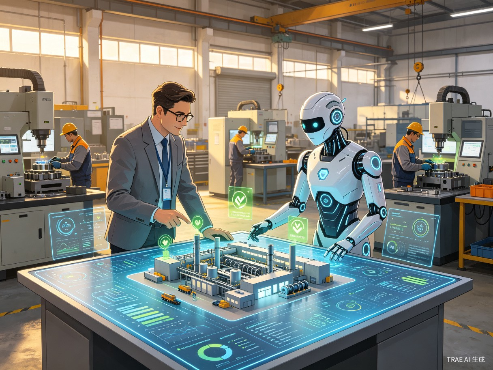
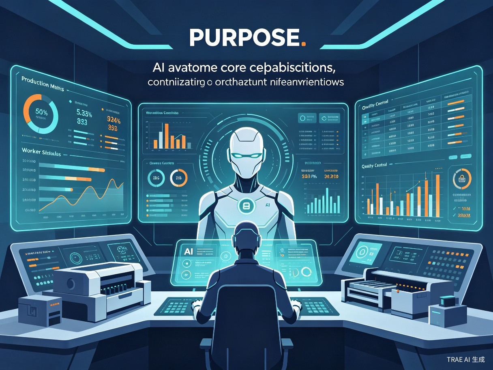

1车间主任的日常痛点
作为车间主任，你是整个生产现场的"中枢神经"。每天面对的不是单一任务，而是信息洪流与多线程压力的叠加：
信息过载
设备状态、工单进度、质量异常、人员考勤……数据分散在多个系统中，需要手动汇总才能掌握全局。
时间碎片化
会议、巡检、异常处理、报表填写占据了大量时间，真正用于优化生产的时间被严重挤压。
经验难以传承
排产技巧、故障判断逻辑、人员调配经验都存在于你的大脑中，一旦休假或离职，团队运转效率骤降。
响应延迟
夜间或节假日发生异常时，无法第一时间做出判断和调度，小问题可能演变成大损失。
2什么是"车间主任 AI 分身"
车间主任 AI 分身是一个基于大语言模型和工业数据融合的智能代理系统。它通过学习你的工作习惯、决策逻辑和车间运行规律，成为一个可以7×24 小时在线、实时响应、自主执行规则内任务的数字助手。
它不是要取代你，而是要成为你的"超级外挂"——替你盯现场、做分析、发指令、写报告，让你从"消防员"转型为"战略指挥官"。

分身的三大定位
- 信息中枢：实时汇聚 MES、ERP、SCADA、考勤等系统数据，形成统一的车间态势感知
- 执行代理：按照预设规则自动处理常规事务，如排产调整、异常预警、报表生成
- 决策参谋：基于历史数据和行业最佳实践，为复杂问题提供分析建议和多方案对比
3核心能力矩阵
AI 分身的能力覆盖车间管理的全链路，从数据感知到决策支持，形成一个完整的智能闭环。

设备智能监控
接入 SCADA/PLC 数据，实时监测设备运行参数，预测性维护提醒，故障根因自动分析。
生产动态排程
根据订单优先级、设备状态、物料齐套情况，自动优化排产计划，并模拟推演不同方案的效果。
质量异常预警
基于 SPC 控制图和工艺参数关联分析，在质量事故发生前发出预警，并推荐调整措施。
人员智能调度
结合技能矩阵、考勤状态、工时负荷，自动推荐最优人员配置方案，并处理临时请假/加班需求。
自然语言交互
支持语音/文字对话，你可以像对助理说话一样询问"今天设备OEE怎么样"、"帮我排下周计划"。
自动报告生成
日报、周报、月报、异常分析报告一键生成，自动提取关键指标和趋势洞察，节省 80% 文案时间。
4典型应用场景
场景一：晨会前的"自动战备"
每天上班前，分身已经自动完成了以下工作：
- 汇总昨日生产达成率、设备故障、质量异常等关键指标
- 识别今日高风险工单（物料不齐、设备待修、工艺变更）
- 生成晨会简报 PPT，标注需要重点讨论的事项
- 推送今日待办清单到你的手机/工位屏
场景二：异常发生时的"秒级响应"
某台 CNC 突然报警，分身立即执行：
- 0 秒：接收报警信号，识别故障代码含义
- 5 秒：查询历史同类故障的平均修复时间和常用解决方案
- 15 秒：判断是否需要停线，自动通知维修班和上下游工序
- 30 秒：生成临时排产调整方案，最小化对交付的影响
- 1 分钟：推送完整处置建议到你的终端，等待你确认或自动执行
场景三：休假期间的"无缝代理"
你休假时，分身进入"代理模式"：
- 常规事务按规则自动处理，无需人工干预
- 超出权限或规则边界的事项，自动汇总为"待决策清单"
- 每日发送"车间运行摘要"到你的手机，让你安心休假
- 紧急事项（如安全事故、客户投诉）立即电话/短信通知你
场景四：经验沉淀的"数字传承"
你每次做出的排产调整、人员调配、异常处置决策，分身都会记录并学习：
- 自动提取决策逻辑，形成可复用的"决策模板"
- 新主任上任后，分身可快速传递你的管理经验和车间运行规律
- 团队知识库持续积累，不因人员流动而流失
5系统架构设计
AI 分身采用分层架构设计，确保与现有工业系统的兼容性和数据安全性。
| 层级 | 组件 | 功能说明 |
|---|---|---|
| 交互层 | 语音助手 / 工位屏 / 移动端 / Web 端 | 多模态人机交互入口，支持自然语言对话和可视化看板 |
| 智能层 | 大语言模型 + 行业知识库 + 决策引擎 | 理解意图、推理分析、生成方案、学习优化 |
| 数据层 | 数据融合中间件 / 实时流处理 / 历史数据库 | 汇聚 MES、ERP、SCADA、WMS、考勤等异构数据 |
| 接入层 | OPC UA / MQTT / API 网关 / 数据库连接器 | 与现有工业软件和硬件的标准化对接 |
| 安全层 | 权限管控 / 数据加密 / 审计日志 / 国密支持 | 确保工业数据安全和操作可追溯 |
部署方式
- 边缘部署：核心推理引擎部署在工厂本地服务器，确保数据不出厂、响应低延迟
- 混合云模式：模型训练和大模型基座调用走云端，业务数据和实时推理在本地
- 信创兼容：支持国产芯片（鲲鹏/飞腾）和国产操作系统（麒麟/统信）
6实施路线图
采用"小步快跑、快速见效"的迭代策略，分四个阶段推进：
第一阶段：数据打通（1-2 个月）
完成 MES、ERP、SCADA 等系统的数据接入，建立统一数据模型；部署基础对话助手，实现"问数"能力。
第二阶段：单点智能（2-3 个月）
在设备监控、质量预警、排产辅助三个场景实现智能化；分身可自动识别异常并推送告警。
第三阶段：协同代理（3-4 个月）
实现跨系统联动，分身可自动执行规则内操作（如调整工单、发送通知）；支持自然语言指令。
第四阶段：自主进化（持续）
基于你的反馈持续学习优化决策逻辑；扩展至更多场景（能耗优化、供应链协同、安全管理等）。
7预期价值与收益
软性收益
- 管理升级：从"被动救火"转向"主动预防"，从事务执行者升级为战略规划者
- 团队赋能：班组长和一线员工可通过分身获取决策支持，整体管理水平提升
- 职业竞争力：掌握 AI 工具的车间主任成为行业稀缺人才，职业发展空间拓宽
- 工作幸福感：减少重复劳动和夜间打扰，实现"高效工作、安心生活"
8风险识别与应对策略
| 风险类型 | 风险等级 | 应对策略 |
|---|---|---|
| 数据安全与隐私泄露 | 高 | 本地私有化部署，核心数据不出厂；敏感数据脱敏处理；权限分级管控 |
| AI 决策失误导致损失 | 高 | 设置"人机确认"机制，关键操作需人工审批；建立决策追溯和回滚机制 |
| 系统与现有设备不兼容 | 中 | 采用标准化协议（OPC UA/MQTT）；提供定制化适配器；分阶段接入验证 |
| 员工抵触与信任不足 | 中 | 强调"辅助而非替代"；从低风险场景起步；让一线员工参与设计和测试 |
| 模型幻觉与信息不准确 | 中 | 限定知识边界（RAG 检索增强）；关键数据交叉验证；设置置信度阈值 |
| 投入产出比不达预期 | 低 | 采用 SaaS 订阅或分期建设模式；设定明确的阶段目标和验收标准 |
9结语：让 AI 成为你的"第二大脑"
车间主任的价值不在于处理多少条消息、填写多少张表格，而在于对生产全局的洞察、对团队的管理、对质量的坚守。AI 分身的使命，就是把你从繁琐的事务性工作中解放出来，让你有更多时间和精力去做那些真正需要"人"来做的事情。
这不是遥远的未来科技，而是正在发生的工业变革。现在就开始规划和建设你的 AI 分身，让它成为你最可靠的搭档，共同守护车间的每一台设备、每一位员工、每一份订单。